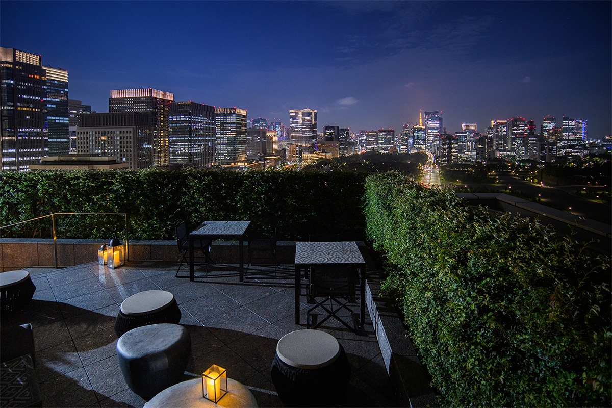
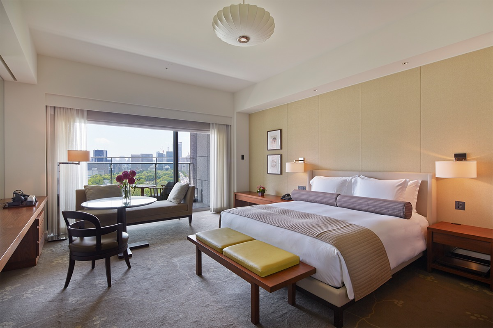
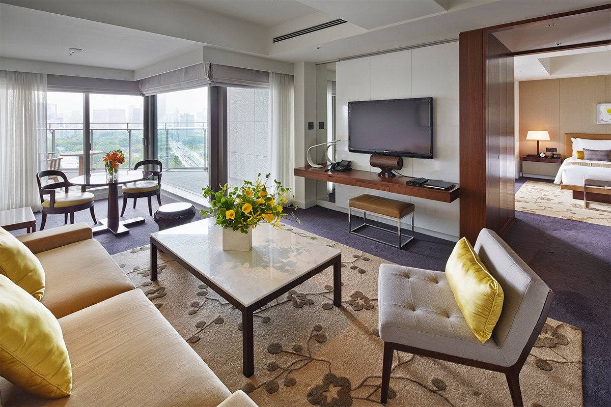
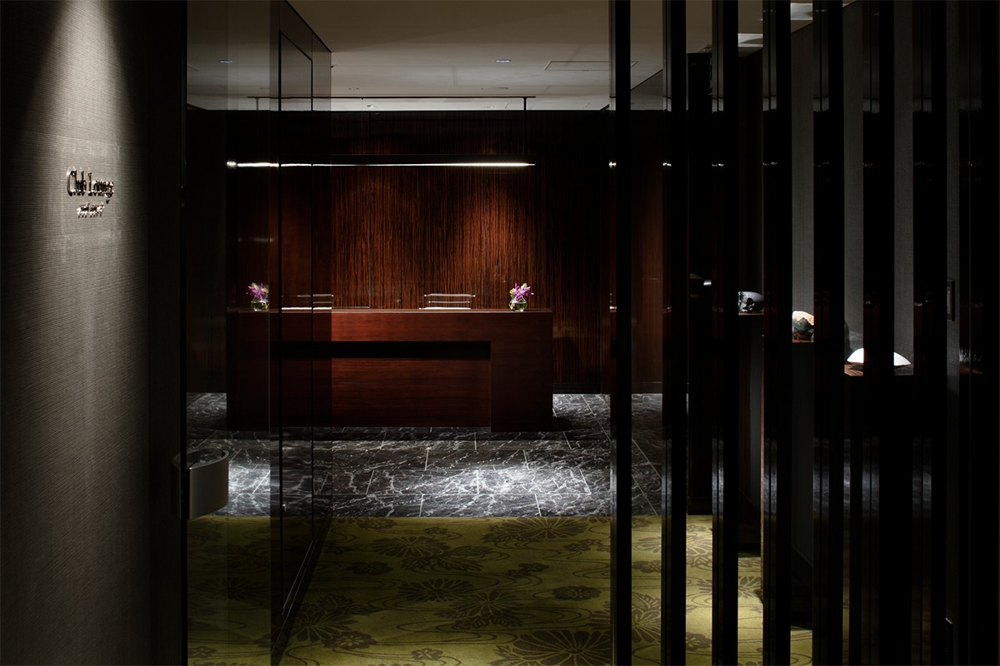
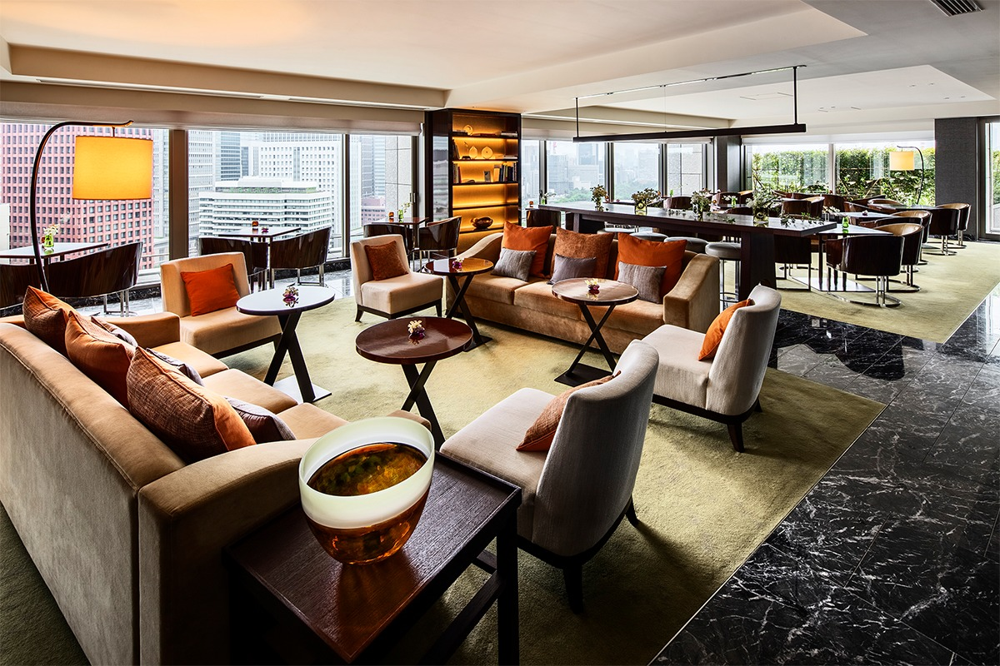
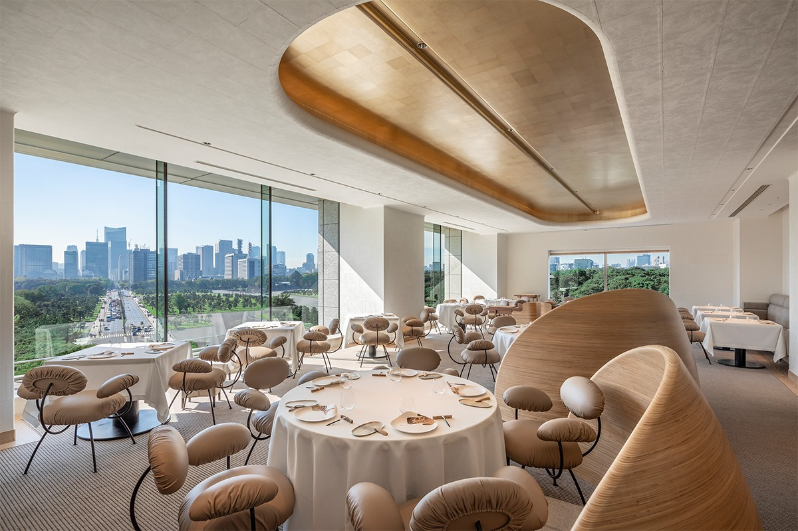
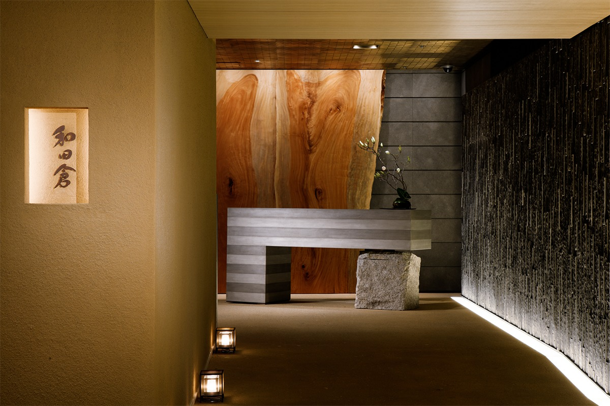
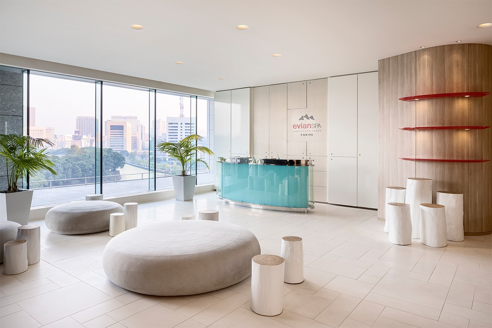

Токио · Маруноути · отель
Palace Hotel Tokyo: день с видом на лес у Императорского дворца

Palace Hotel Tokyo стоит в нескольких минутах ходьбы от вокзала Токио, по адресу Маруноути 1-1-1. За окнами вместо соседних небоскрёбов деревья и вода: парк у Императорского дворца, старые рвы и фонтаны.
История
Отель в самом центре Токио
Отель открылся в 1961 году под названием Palace Hotel. В 2009 году его закрыли, чтобы построить заново, а в 2012 году на том же месте открылся Palace Hotel Tokyo на 290 номеров. Девиз отеля звучит так: «В прекрасной стране есть прекрасный день».
Отсюда, из самого центра, по адресу Маруноути 1-1-1, отель наблюдает за тем, как растёт и меняется Токио.
Номера
Зелень и вода за окном
Номера делятся на три группы: Deluxe, Grand Deluxe и сюиты. Номера Deluxe смотрят либо на запад, на улицу Утибори-дори вдоль дворцового рва, либо на юг, на парк фонтанов Вадакура. Трудно поверить, что ты в центре Токио: за окном почти одни деревья. Ванные комнаты просторные и светлые, в них хочется задержаться.

Номера Grand Deluxe расположены там же, но они просторнее, с гардеробной. Лёжа в ванне, можно любоваться видом за окном.
Сюиты Executive Suite и Garden Suite выдержаны в спокойных золотистых и кремовых тонах. Chiyoda Suite считают лучшим номером отеля: в комнатах натуральные оттенки и японская сдержанность, шёлковые ткани и лаковые детали, а просторная ванная отделана мрамором и тяжёлым камнем с полуострова Идзу. Есть ещё Park Suite с панорамным видом и Terrace Suite с террасой на 40 квадратных метров.

Лаунж
Клубный этаж над парком
Гости номеров Club Deluxe, Club Grand Deluxe и сюитов могут пользоваться клубным лаунжем на 19-м этаже. Здесь же отдельные сотрудники быстро оформляют заезд и выезд. Завтрак, послеобеденный чай, вечерние канапе, безалкогольные и алкогольные напитки входят в стоимость.


В лаунже есть отдельная комната и места на террасе. После 17:30 сюда пускают только гостей от 13 лет, так что можно и поработать, и просто отдохнуть. Гости любят маленький подарок лаунжа: спрей для ткани с ароматом, который составили специально для отеля.
Рестораны
Франция и Япония на шестом этаже
ESTERRE это французский ресторан высокой кухни, задуманный как место, где «встречаются земля и море». Партнёр отеля здесь Ducasse Paris, компания, которую основал великий французский шеф Ален Дюкасс. Ресторан строго держится французской кухни, но строит меню на сезонных японских продуктах и на терруаре, то есть на особенностях японской почвы и климата. Столик нужно бронировать заранее, дресс-код «смарт элегант».

Японский ресторан Wadakura подавал кайсэки ещё в старом Palace Hotel, а к открытию нового отеля получил новый интерьер. Глиняные стены и пол с тонким переходом цвета сделал талантливый мастер штукатурных работ. На обед здесь подают двухъярусный бэнто, небольшой кайсэки и обед с угрём, а на ужин полноценный кайсэки и сябу-сябу.

Спа
Вода для здоровья
evian SPA TOKYO это спа курорта Evian Resort на берегу Женевского озера во Франции, который любят знаменитости со всего мира. Тема спа это здоровье через воду. Здесь есть термальная зона для отдыха и процедуры для лица, терапия и уход против старения. В процедурах используют косметику французской марки Anne Semonin, ту же, что лежит в ванных номеров. Вместе с процедурами можно пользоваться бассейном, фитнес-залом и сауной.

Palace Hotel Tokyo
- Адрес
- Токио, Тиёда, Маруноути, 1-1-1
- Телефон
- +81 3-3211-5211
- Номера
- 290
- Заезд / выезд
- 15:00 / 12:00
- Цены / Вход
- от 70 000 иен за ночь без налога и сервисного сбора; доступ в клубный лаунж от 18 000 иен за ночь дополнительно (без налога и сервисного сбора)
- Как добраться
- подземный переход от станции метро Отэмати ведёт прямо в отель; от северного выхода Маруноути вокзала Токио (JR) 8 минут пешком
Клубный лаунж, 19-й этаж
- Часы работы
- завтрак 7:30–10:30, послеобеденный чай 14:00–16:00, вечерние канапе 17:30–20:00
ESTERRE, 6-й этаж
- Телефон
- +81 3-3211-5317
- Часы работы
- 11:30–14:00, 18:00–21:00 (последний заказ), закрытие в 22:00; только по предварительной брони
- Цены / Вход
- 60 мест, 3 отдельных зала; дресс-код «смарт элегант»
Wadakura, 6-й этаж
- Телефон
- +81 3-3211-5322
- Часы работы
- 11:30–14:30, 17:30–21:00 (последний заказ), закрытие в 22:00
- Цены / Вход
- 78 мест, 9 отдельных залов; дресс-код «смарт кэжуал»
evian SPA TOKYO
- Часы работы
- 11:00–20:00